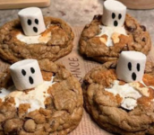

Ghost Smore's Cookies
by Seydie Wis

A spooky treat to make during the Halloween season. Sweet chocolate chip cookies with a summer twist that brings you back to the campfire but with a fall taste. (12 servings).

A spooky treat to make during the Halloween season. Sweet chocolate chip cookies with a summer twist that brings you back to the campfire but with a fall taste. (12 servings).
Such a good dessert for the fall time! My boyfriend loved them and we had so much fun making them. We will definitely make them again for each others families for the holidays.
I made these for my wife for her birthday because she loves marshmallows. She liked them, thought the graham cracker made it a little dry but she loved the chocolate with the grahram cracker. Maybe next time I'll incorporate her in the baking so she can enjoy it more next time.
As someone who loves to bake, this recipe was very easy to follow and fairly quick! Would recommend to anyone who's wanting to try out baking for the first time and wants a fast sweet treat. Also perfect the spooky season. Might as well make some for trick-or-treaters this year, I bet kids would love them.